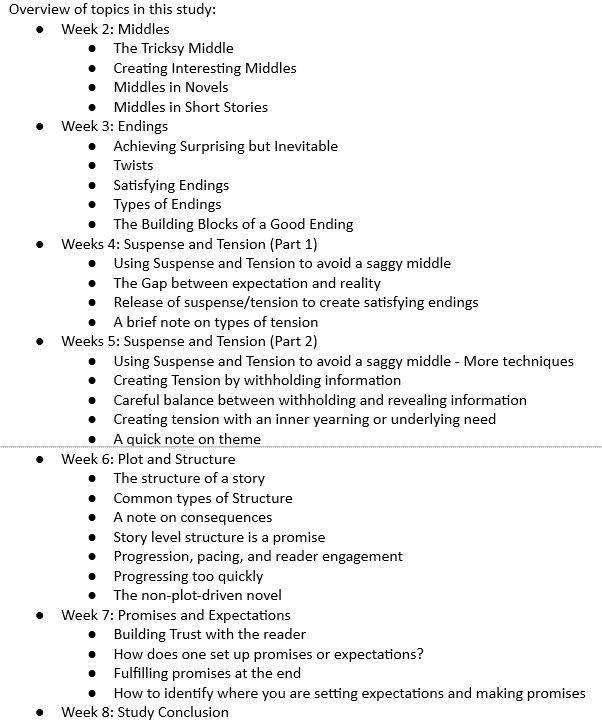

Discord Study Group
Writing Strong Middles and Ends in Fiction

View the Manuscript for the Study!
Over a period of three or so years, from 2018 on, I applied to multiple writing workshops when I found myself struggling to write strong middles and ends in my fiction. I was rejected 6 times from those workshops. Three times from just one of them!
I also tried to search for online courses specifically for writing middles and ends in fiction, but found none. There were plenty of courses for beginners, and I took some, but not many for middles or ends. Or at least not many that were accessible to me.
After so many rejections and finding no course to take, I decided to stop waiting. I set out to use my past experience in Instructional Design to build my own study. But I didn't want to do it alone. So I reached out to a writing Discord community called Bookdun, which I'd joined a while back, and asked if anyone would be interested in studying with me. To my surprise, the idea proved popular!
So, with the help of a craft-loving volunteer from the community, I set out to build my own course on writing strong middles and ends in fiction.
Responsibilities: Analysis, Instructional design, eLearning Development,
Implementation, host
Target Audience: Students of the writing Discord community interested in improving the
writing of middles and ends in fiction
Tools Used: Microsoft Office, Google Drive, Discord, Open Broadcast Studio (OBS)
Client: None, this was not done for profit
Process
While I had created similar courses in the past, this particular study group was inspired by the Schoolism learning community on Discord. After joining in on a few of Shoolism's study sessions, hosted by moderators employed by Schoolism, I felt emboldened to follow their model and create my own study group.
I am a fiction writer, and I struggle with middles and ends in my fiction. It turned out this sentiment was shared by other writers. I have also attended numerous online courses, and built hundreds of them through my work with 21CLS. I realized that the best courses for me personally included the following:
- A regular video or voice chat meetup
- Engaged and curious students willing to help each other
- A professional perspective (which doesn't have to come from the host)
In my experience taking fiction writing courses online—and most of my Bachelor's degree—I often found that students would rather engage the instructor than their peers. Especially in writing and art courses.
I think this was due to the fact that the instructor was the authority. Students wanted that professional feedback. As a result, peer feedback seemed to be less valuable due to the fact that the students were all there, not to meet and work with peers, but to get advice for themselves about their own work.
Often, my purpose for signing up to online courses outside of my BA was to make friends with people who enjoyed similar pursuits. However, it was hard for me as an introvert to engage in that forum. I'm not very loud, and I found that the loudest students got the most engagement.
In Schoolism's model, I found my specific niche. The study is “hosted” by a moderator in the Discord community, or even another student with a Schoolism subscription. The group chooses a day and time to meet each week via voice chat or video call, and they view lessons from, and discuss a specific course provided by, Schoolism. Since the host is often just another member of the community, rather than the authority (though the hosts do tend to have more experience than a beginner) the group seems to become more engaged with each other, and value peer feedback more.
And thus I chose this model to build my Discord study group.
Analysis
Before deciding anything, I watched a video course calledThe Great Courses: Writing Great Fiction. I made notes and consolidated those notes into a syllabus, using example curriculum from online universities (such as UCLA and Stanford) to help hone in on important learning objectives. That course served as my original Subject Matter Expert (SME).
I chose Discord because there was already an established writing community that I was a part of there. Discord being accessible by mobile phone, and mostly a text-based chat app, helped to make it more flexible.
To provide value to those who couldn't access the Great Courses content, I consulted a podcast produced for free by professional authors, called Writing Excuses. This was our accessible professional perspective. The podcast episodes are short, and each deal with a topic related to fiction writing. Writing Excuses also has an extensive backlog of episodes (18 seasons), so I combed through the archives and found podcasts relevant to my chosen subjects.
The following is a breakdown of the subjects and learning objectives for the study group:

Once I had all of this information collected in a very rough, long-winded form, I turned to the Discord for feedback. And when I reached out, someone else reached back to assist.
Designing the Study Group
With the help of that member of the writing community, I began compiling my notes into a more readable format. Together, we removed information that did not align to the objectives listed previously. That volunteer member wrote their own notes for Weeks 4 - 6, while I compiled my notes for Weeks 2, 3, and 6, along with Weeks 1 and 8. Together we tightened the course into its current shape, which we both felt thoroughly covered the craft we were trying to study.
We also came up with homework assignments for the study participants to try each week. We used a mix of assignments suggested in the Great Courses video, along with assignments made up based on the analysis of important lessons within each section.
Once we completed our notes and chose all the articles and podcasts for the weeks, I reached out to the Discord moderators in the community, asking how we might work with them to implement the study. They suggested we use a pre-existing channel called #craft-club, which was originally meant as a study group channel, but which hadn't seen much use recently.
My co-writer turned co-host helped me put together a release schedule for the study. For 8 weeks, we would release the “write-up” we had done on a Monday. The write-up included our notes and links to the podcasts and articles for that week. On Saturday, we scheduled a discussion group event in the Discord Voice Chat, where we would gather and discuss the topics covered in the write-up and the podcasts. This covered another important element: regular meetings via voice or video.
I hosted these Saturday meetings and my co-host would answer questions and help during moments of technical difficulty. I shared my screen using OBS studio so that I could use graphic elements (like a background) and a document to display our disccussion topics for the week. Our discussions were generally informal, based around that week's subject, and surrounding subjects we learned or things we struggled with.
Due to the casual nature of the group, we also implemented "breaks," so people could catch up if needed. Most of the members had lives outside of the group, and it was very easy to fall behind. This was something else implemented in the Schoolism Discord that I found particularly noteworthy. Free of the pressure of grades and due dates, I feel like everyone was able to engage much more deeply in the material we were learning.
Conclusion
I learned a lot from this endeavor. First of all, I learned how to lead and host an inclusive discussion around a topic. I learned how to moderate a discussion as well, and how to bring people into a conversation so that it isn't being dominated by one person.
I learned how to design a study completely from scratch using free resources, and how to work within the confines of an established community, abiding by their rules, and working with people already in the community in order to make the study a seamless and helpful experience for everyone.
I learned how to integrate OBS studio into Discord for more graphical elements. I also played around with the structure of online learning, leaning more on the students to engage in their own study rather than lecturing or reading from a script.
I also learned how freeing it is to have a teammate just as enthusiastic as you are!